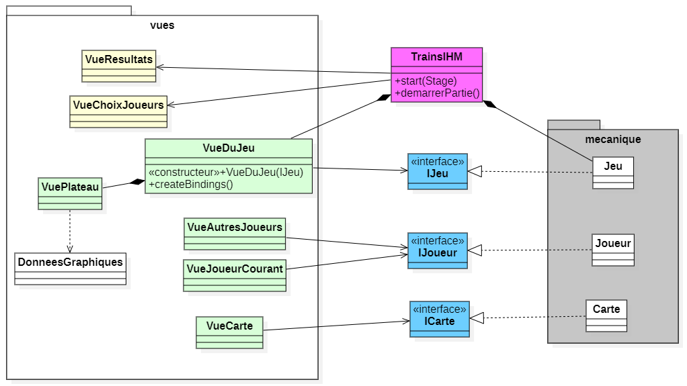
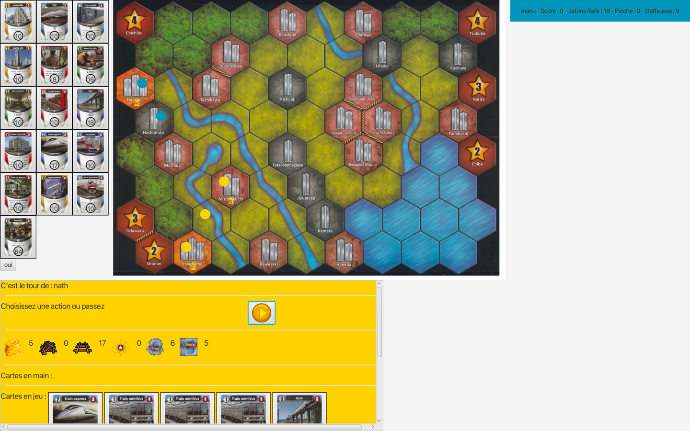

Projet Trains – Développement d'un jeu de plateau en Java
Dans le cadre de ma formation au BUT Informatique, j'ai eu l'opportunité de travailler sur un projet de développement d'un jeu de plateau inspiré du jeu japonais Trains. Ce projet a constitué un excellent terrain d'application pour plusieurs compétences techniques, allant de la programmation orientée objet à l'algorithmique des graphes, en passant par le développement d'interfaces graphiques et l'intégration de tests unitaires.
Présentation du jeu
Le jeu Trains consiste à construire un réseau ferroviaire sur un plateau représentant une région autour de Tokyo ou Osaka. Les joueurs, à leur tour, doivent jouer des cartes qui leur permettent non seulement d'acheter de nouvelles cartes pour améliorer leur deck, mais aussi de placer des rails et des villes sur le plateau afin d'étendre leur réseau. L'objectif étant de connecter des villes tout en optimisant l'utilisation des ressources disponibles.
Phases de développement
Phase 1 : Développement de la mécanique du jeu
Dans un premier temps, j'ai développé la mécanique du jeu en Java, en m'occupant de la gestion des cartes, des joueurs, ainsi que des règles principales du jeu. Cela m'a permis de travailler sur la modélisation des objets, l'implémentation de la logique métier et la gestion des interactions entre les différentes entités du jeu. En parallèle, j'ai également implémenté un système de pioche et de gestion des cartes, permettant de simuler l'ensemble des actions d'un joueur lors de son tour.
Phase 2 : Algorithmique des graphes
Lors de la deuxième phase, l'accent a été mis sur l'algorithmique des graphes. Le jeu reposant sur la notion de réseau ferroviaire, j'ai intégré des algorithmes permettant de déterminer les connexions entre les villes en fonction des rails posés. Cela m'a permis d'approfondir mes connaissances en structures de données et en algorithmique, notamment en utilisant des algorithmes de recherche sur des graphes pour déterminer si un joueur peut atteindre une ville donnée avec son réseau.
Phase 3 : Interface graphique
Enfin, la dernière phase du projet a consisté à implémenter une interface graphique sous JavaFX. Cette étape m'a permis de rendre le jeu interactif et visuellement attractif, en proposant une interface où les joueurs peuvent voir leur réseau ferroviaire se développer en temps réel. Le challenge ici a été d'intégrer cette interface avec la logique du jeu, tout en maintenant une fluidité dans l'interaction. La gestion des événements, la mise à jour des éléments visuels et l'affichage des actions des joueurs ont constitué les principaux aspects techniques de cette phase.
Qualité du code
Tout au long du projet, j'ai porté une attention particulière à la qualité du code. Afin d'assurer le bon fonctionnement du jeu, j'ai rédigé une série de tests unitaires qui vérifient les fonctionnalités de base et les cas particuliers du jeu. Ces tests ont permis de garantir que le projet fonctionne correctement, mais aussi d'améliorer la fiabilité du code au fur et à mesure de l'avancement des phases de développement. L’utilisation des tests unitaires m’a aussi permis de faciliter le débogage et d’optimiser la structure du code en suivant les bonnes pratiques de développement.
Compétences mises en œuvre
- Programmation orientée objet (POO) : J'ai conçu et structuré le jeu en utilisant les principes de la POO, en créant des classes pour les entités principales du jeu comme les cartes, les joueurs et le plateau. Cela m'a permis de gérer la complexité du projet tout en maintenant un code lisible et modulaire.
- Algorithmique et structures de données (graphes) : Le jeu reposant sur un réseau ferroviaire, j'ai utilisé des graphes pour modéliser et gérer les connexions entre les villes. Cela m'a permis de mettre en œuvre des algorithmes de recherche de chemins et de connexion dans un réseau, une compétence essentielle pour la résolution de problèmes complexes.
- Développement d'applications avec JavaFX : Pour rendre le jeu interactif, j'ai utilisé JavaFX afin de créer une interface graphique permettant aux joueurs de visualiser et interagir avec le jeu. Cela m'a permis de développer mes compétences en conception d’interfaces utilisateur et en gestion des événements dans une application graphique.
- Tests unitaires et qualité de code : Tout au long du projet, j'ai écrit des tests unitaires afin de m'assurer que toutes les fonctionnalités du jeu fonctionnent correctement. La rédaction de ces tests m'a permis d'implémenter une approche centrée sur la qualité du code, en évitant les erreurs et en optimisant le comportement du jeu.
Ce projet a non seulement été une expérience technique enrichissante, mais aussi une occasion de travailler de manière autonome et d’approfondir mes compétences en développement logiciel. J'ai particulièrement apprécié la complexité du jeu, qui m'a permis d'explorer différentes facettes du développement, tout en respectant des contraintes de conception strictes. Ce projet a aussi été une excellente préparation pour des projets plus complexes, notamment en gestion d’état et en gestion d’interfaces graphiques.